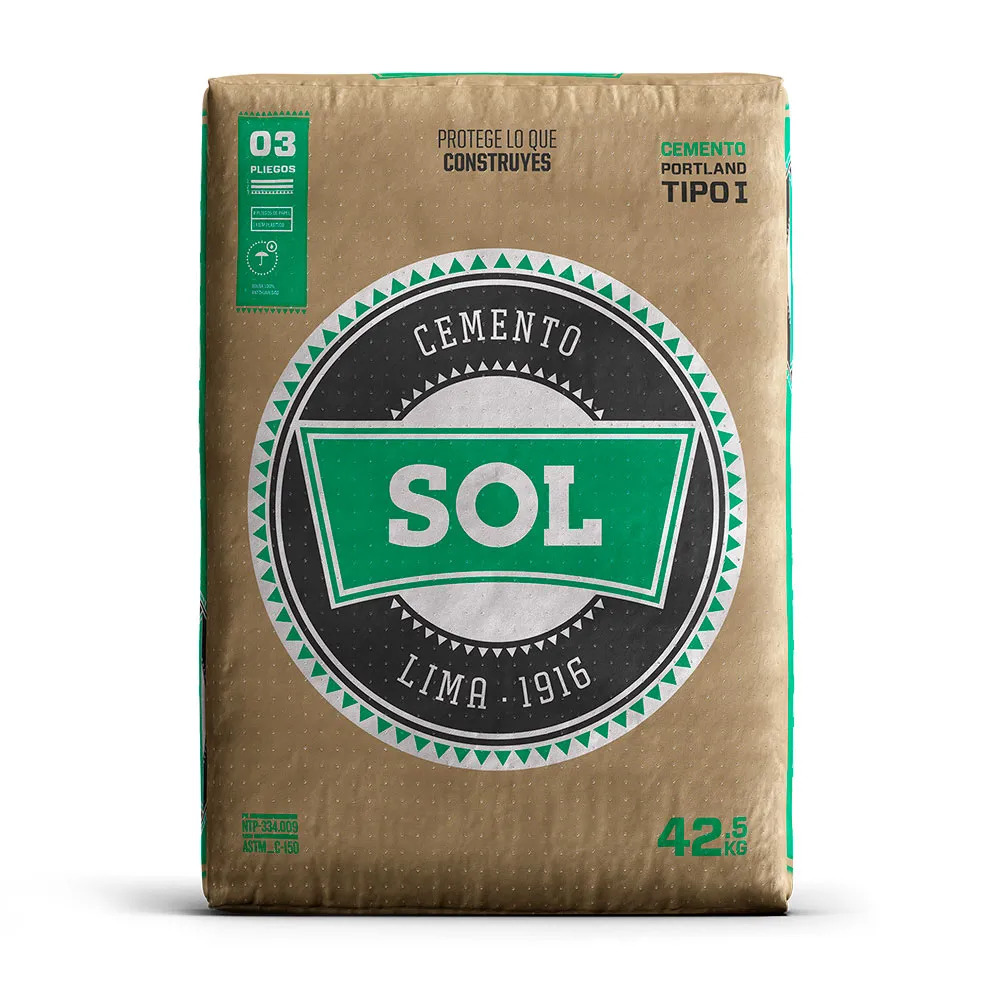

Cemento Portland Sol 42.5 kg

Material aglomerante utilizado para preparar concreto, mortero y mezclas de albañilería. Los sacos pueden almacenarse apilados sobre pallets para facilitar su transporte y protegerlos de la humedad.